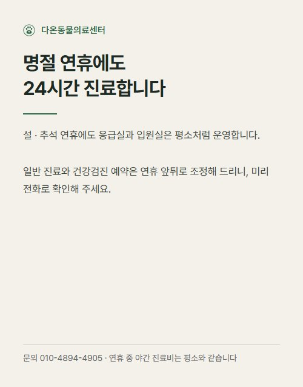
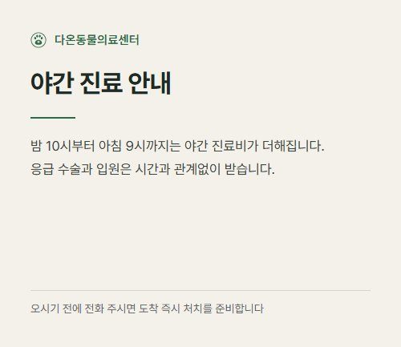
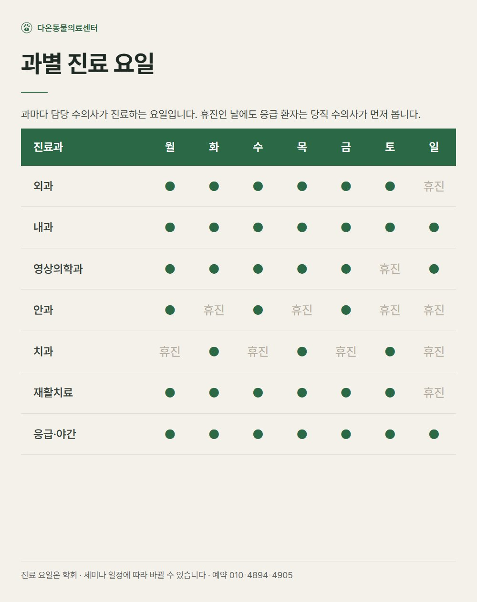
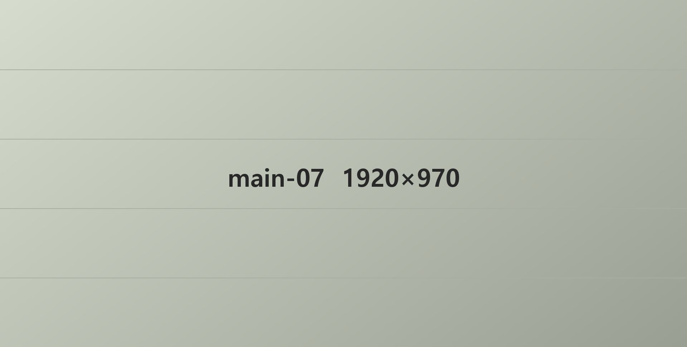
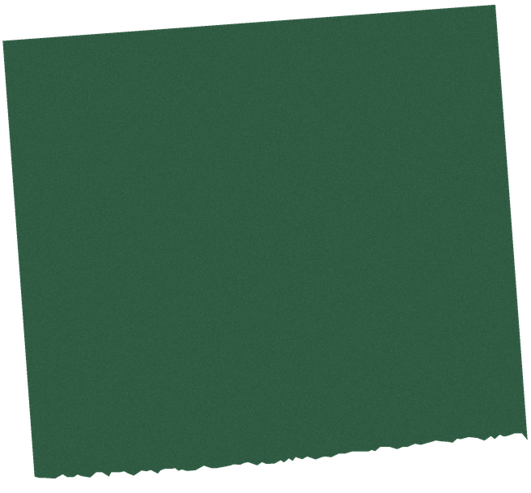

Daon의 진료 원칙
Principles of Treatment건
건
* 26년 6월 기준
24시 다온동물의료센터(이하 ‘본원’)는 「개인정보 보호법」 제30조에 따라 보호자의 개인정보를 어떻게 모으고 쓰는지, 문의는 어디로 하면 되는지를 아래와 같이 알립니다. 제1조(개인정보를 쓰는 곳)본원은 아래 일에만 개인정보를 씁니다. 다른 일에 쓰게 되면 먼저 동의를 받습니다. 1)진료·상담 예약 접수 2)보호자 확인과 진료 기록 관리 3)재진·접종 날짜 알림과 퇴원 후 관리 안내 4)휴진·진료 시간 변경 같은 공지 5)문의와 불편 사항 처리 제2조(받는 개인정보)1)꼭 필요한 항목: 보호자 이름, 연락처, 반려동물 이름·종·나이·체중, 진료 기록 2)고르는 항목: 주소, 이메일 3)홈페이지 접속 때 자동으로 남는 항목: 접속 IP, 쿠키, 방문 일시, 브라우저와 기기 정보 제3조(보관 기간)진료 기록과 보호자 정보: 마지막 진료일로부터 5년 보관 병원 소식 안내용 연락처: 동의한 날부터 1년 보관(동의를 거두면 바로 파기) 법령이 따로 보관 기간을 정한 경우: 그 기간 동안 보관 제4조(다른 곳에 주는 경우)본원은 보호자 동의 없이 개인정보를 밖으로 내보내지 않습니다. 다음 경우만 예외입니다. 보호자가 미리 동의한 경우 법에 따라 내야 하는 경우 사람이나 동물의 생명이 걸린 급한 상황이라 먼저 연락해야 하는 경우 제5조(업무를 맡기는 곳)본원은 예약 문자 발송처럼 일부 업무를 바깥 업체에 맡길 수 있고, 맡길 때는 계약서에 개인정보 보호 조항을 넣습니다. 1)맡기는 곳: 계약 후 이 자리에 적습니다 2)맡기는 일: 예약 관리 프로그램, 문자·알림톡 발송 3)보관 기간: 계약이 끝날 때까지 ※ 맡기는 곳이나 일이 바뀌면 이 방침에 먼저 올립니다. 제6조(보호자가 요청할 수 있는 것)보호자는 언제든 아래를 요청할 수 있습니다. 1)내 개인정보 보여 달라는 요청 2)틀린 내용 고쳐 달라는 요청 3)지우거나 쓰지 말라는 요청 요청은 서면·전화·이메일로 받고, 받은 날부터 10일 안에 처리 결과를 알려 드립니다. 제7조(파기)보관 기간이 끝났거나 더 쓸 일이 없어진 개인정보는 바로 파기합니다. 1)컴퓨터 파일: 되살릴 수 없는 방법으로 지움 2)종이 서류: 문서 파쇄기로 파쇄하거나 소각 제8조(안전하게 지키는 방법)본원은 개인정보를 지키려고 다음을 합니다. 1)진료 기록 프로그램은 담당 직원 계정으로만 열람 2)원내 컴퓨터에 백신과 방화벽 설치 3)개인정보를 다루는 직원 수를 줄이고 해마다 교육 제9조(개인정보 보호책임자)개인정보에 관한 문의와 불편 접수는 아래 보호책임자가 맡습니다. 개인정보 보호책임자: 김진수 직위: 대표 연락처: 010-4894-4905 이메일 6gsmake@gmail.com ※ 개인정보 관련 문의는 위 연락처로 해 주세요. 제10조(도움받을 수 있는 곳)개인정보 침해로 상담이나 신고가 필요하면 아래 기관에 문의할 수 있습니다. 개인정보침해신고센터: privacy.kisa.or.kr / ☎ 118 대검찰청: www.spo.go.kr / ☎ 1301 경찰청 사이버수사국: ecrm.police.go.kr / ☎ 182 제11조(방침이 바뀔 때)이 방침은 2026년 7월 1일부터 적용합니다. 내용이 바뀌면 시행 7일 전에 홈페이지와 원내 게시판에 올립니다.
With Daon Animal Medical Center
건
건
* 26년 6월 기준

보호자님이 Daon을 고르는 이유

보호자님께
입원실에서 며칠씩 지낸 아이가 다시 걸어서 퇴원하고
보호자님 품에 안겨 문을 나설 때, 이 일을 하길 잘했다고 생각합니다.
끝내 보내야 했던 아이들도 있습니다. 그런 밤이 지나면
그 아이의 기록을 다시 펴 보고 다음에는 무엇을 달리 할지 적어 둡니다.
집에 있는 우리 아이를 대하듯 검사하고 설명하겠습니다.
치료가 끝난 뒤에도 궁금한 게 생기면 언제든 전화 주세요.
고맙습니다.
다온동물의료센터 수의사·간호사 일동Daon의 진료 태도
Daon의 의료진은 검사 전에 비용과 순서를 먼저 알리고,Daon의 진료 원칙